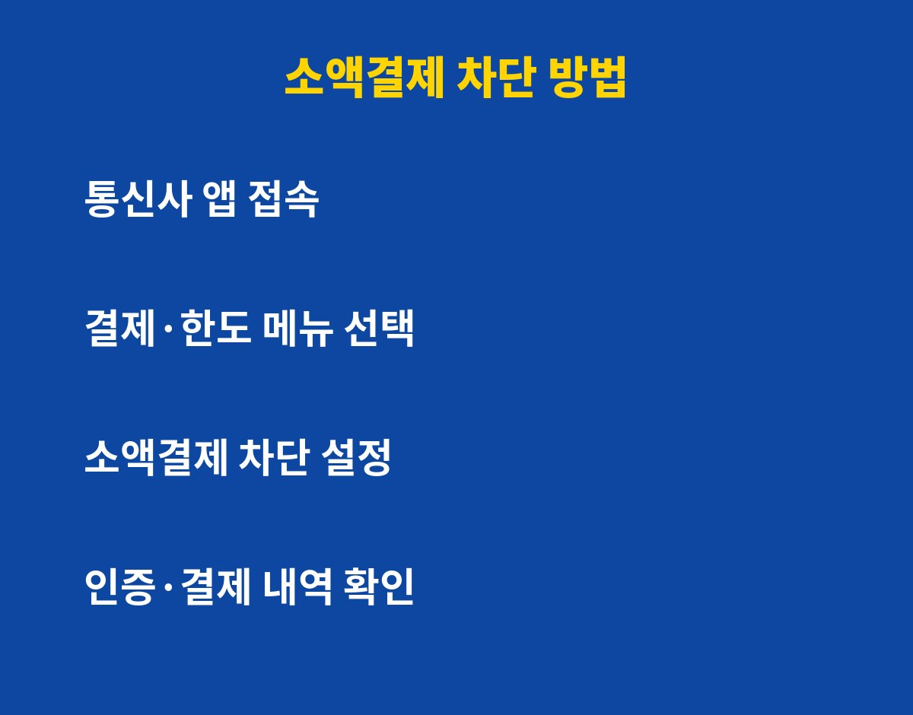
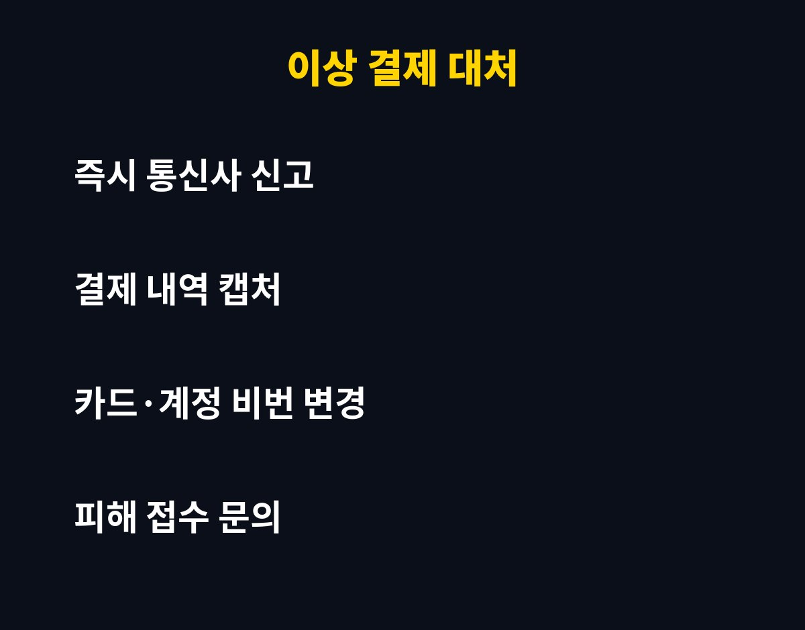

소액결제 차단은 통신사 앱에서 3분이면 설정할 수 있고, 안 해둔 폰은 문자 링크 한 번에 요금으로 결제가 붙을 수 있어요. 휴대폰을 평소에 쓰는 분이라면 꼭 확인해야 하는데, 그런데 이미 차단했다고 생각한 분도 오히려 풀려 있을 수 있어요. 이유는 아래에 있어요.
소액결제는 휴대폰 요금에 결제 금액이 합산되는 방식이에요. 카드 없이도 앱 결제, 콘텐츠 구매가 되니까 편하지만, 반대로 내가 모르는 사이 결제가 일어나도 한 달 뒤 청구서에서야 알게 되는 경우가 있어요.
특히 출처 불명 문자 링크를 누르거나 인증번호를 알려주면 결제로 이어지는 사기 수법이 꾸준히 보고돼요. 자주 안 쓴다면 아예 막아두는 게 가장 안전해요.

가입한 통신사 앱(또는 고객센터)에서 결제·한도 관련 메뉴로 들어가 소액결제를 차단으로 바꾸면 돼요. 메뉴 이름은 통신사마다 조금씩 달라서, 앱에서 '소액결제'를 검색하면 빠르게 찾을 수 있어요.
알뜰폰을 쓴다면 해당 알뜰폰 업체 앱이나 고객센터에서 같은 방식으로 설정해요. 설정 후에는 반드시 '차단 상태'로 바뀌었는지 화면을 한 번 더 확인하세요.
| 상황 | 추천 설정 |
|---|---|
| 소액결제를 거의 안 씀 | 완전 차단 |
| 가끔 쓰는 서비스가 있음 | 한도 최소화 후 사용 |
| 부모님·자녀 폰 | 완전 차단 후 결제 알림 켜기 |
| 최근 이상 문자를 받음 | 차단 + 비밀번호 변경 |
폰을 바꾸거나 요금제·명의를 변경하면 설정이 초기화되거나 달라질 수 있어요. 예전에 풀어둔 걸 잊고 있는 경우도 많고요. 그래서 기기 변경 후에는 꼭 다시 확인하는 습관이 필요해요.

먼저 통신사 고객센터에 바로 연락해 결제 내역 확인과 이의 제기를 하세요. 결제 문자와 청구 내역은 캡처해 두면 도움이 돼요. 이후 관련 계정 비밀번호를 바꾸고, 수상한 앱이 깔려 있다면 삭제하는 것도 잊지 마세요.
오늘 3분만 투자해서 내 폰 상태부터 확인해 보세요. 이런 생활 밀착 IT 꿀팁이 도움이 되셨다면 구독과 공감 부탁드려요!
기사·공식 발표 기준이며 출시·가격 정보는 바뀔 수 있어요.